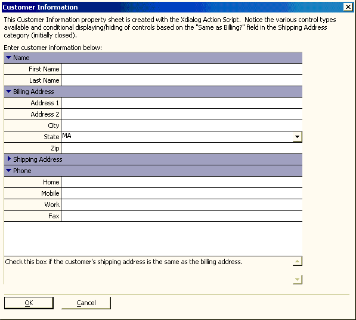

Customer Information Input
This topic describes the process of creating a property sheet that accepts user input into a series of variables.

This property sheet was created with Action Scripting. See Property-Sheet Style Xdialog.
When adding items to the property sheet, the designer entered each variable's name into the Item Properties > Variable Name list and selected its data type from the Item Properties > Variable Type list. Note that these variables are not bound to a table. See Populated from Table for an example of bound table fields.
On the Initial Code tab of the Property Sheet Builder you can see the variables that were created. These DIM statements also define default values for some variables.
See Also
Limitations
Desktop applications only.